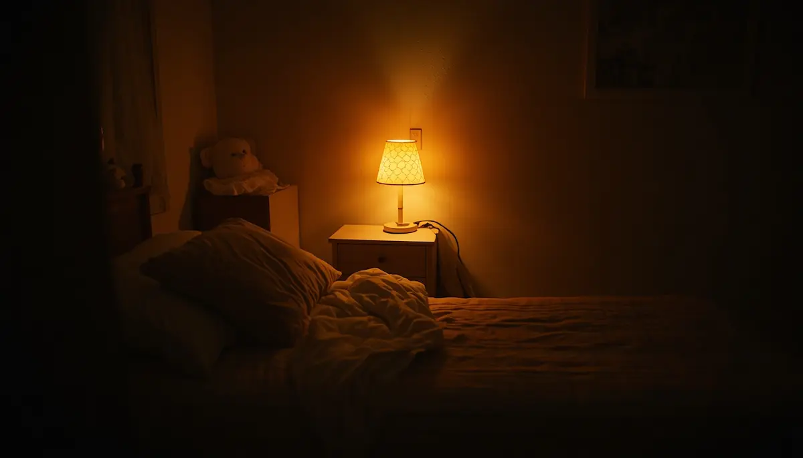

Afrontar terrores nocturnos y despertares
Uno de los episodios más desconcertantes y angustiosos para las familias son las alteraciones repentinas durante la noche, como las pesadillas o los terrores nocturnos. Ver a un hijo gritar, llorar o mostrarse inconsolable con los ojos abiertos, sin llegar a reconocernos del todo, genera un profundo impacto emocional. Saber distinguir qué ocurre y cómo actuar con serenidad es clave para ofrecer un refugio seguro.
Diferenciar pesadillas de terrores nocturnos
Las pesadillas ocurren durante la fase de sueño REM y suelen despertar al niño por completo, recordándolas con miedo y buscando consuelo inmediato en los padres. Por el contrario, los terrores nocturnos se producen en las primeras horas de la noche durante el sueño profundo: el menor grita o se muestra aterrorizado, pero continúa dormido y no suele recordar nada al despertar a la mañana siguiente. En este último caso, intentar despertarle con fuerza solo prolonga su confusión; lo adecuado es acompañar su seguridad con calma y evitar que se haga daño.
"Ante un terror nocturno, nuestra presencia serena y silenciosa actúa como un ancla de seguridad que disipa la angustia sin necesidad de forzar el despertar."
Estrategias prácticas para acompañar los sobresaltos nocturnos
Afrontar estos episodios desde la tranquilidad ayuda a que el sistema nervioso del menor recupere el equilibrio con mayor rapidez:
1. Mantener la calma y evitar sacudidas: Hablar con voz suave, ofrecer contacto físico respetuoso si lo acepta y velar por su seguridad física en la cama sin exigir explicaciones.
2. Revisar los factores de sobreestimulación diurna: Reducir el cansancio extremo, las jornadas demasiado intensas o la exposición a contenidos angustiosos antes de dormir, ya que suelen actuar como detonantes.
Proteger el sueño con presencia y serenidad
Comprender que los terrores nocturnos son una manifestación madurativa transitoria nos libera del miedo. Con una actitud paciente y un entorno protector, las noches turbulentas vuelven a transformarse en espacios de reposo.
➔ Volver al índice de Trastornos del sueño